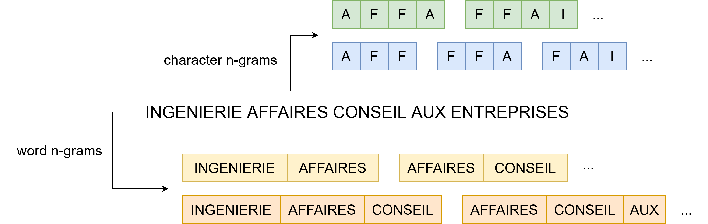

UNECE Machine Learning for Official Statistics Workshop 2023
5 June 2023
Several major changes:
Observation: Sicore is no longer a suitable tool ➨ 30% automated coding.
Consequence: Ideal moment to propose a new methodology for automated NACE coding.
\(\approx\) 10 million observations from Sirene 3 covering the period 2014-2022.
Data labeled both by Sicore and manually.
An observation consists of:
| Level | NACE | Title | Size |
|---|---|---|---|
| Section | H | Transportation and storage | 21 |
| Division | 52 | Warehousing and support activities for transportation | 88 |
| Group | 522 | Support activities for transportation | 272 |
| Class | 5224 | Cargo handling | 615 |
| Subclass | 5224A | Harbour handling | 732 |

C++) “bag of n-grams” model.| Text | NAT | TYP | EVT | SUR |
|---|---|---|---|---|
| Cours de musique | NaN | X | 01P | NaN |
“Cours de musique NAT_NaN TYP_X EVT_01P SUR_NaN”
| Transformation | Text description |
|---|---|
| Input | 3 D: La Deratisation - La Desinsectisation - La Desinfection |
| Lower-case conversion | 3 d: la deratisation - la desinsectisation - la desinfection |
| Punctuations removal | 3 d la deratisation la desinsectisation la desinfection |
| Transformation | Text description |
|---|---|
| Input | 3 D: La Deratisation - La Desinsectisation - La Desinfection |
| … | … |
| Numbers removal | d la deratisation la desinsectisation la desinfection |
| One-letter word removal | la deratisation la desinsectisation la desinfection |
| Stopwords removal | deratisation desinsectisation desinfection |
| Transformation | Text description |
|---|---|
| Input | 3 D: La Deratisation - La Desinsectisation - La Desinfection |
| … | … |
| NaN removal | deratisation desinsectisation desinfection |
| Stemming | deratis desinsectis desinfect |
Figure 1: Accuracy for various level of the NACE nomenclature.
Figure 2: Top-\(k\) accuracy per sample.
Figure 3: Distribution of the confidence index based on prediction results.
Figure 4: Accuracy for various shares of manual coding.